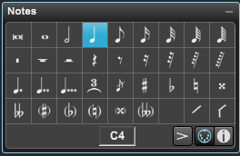

Step Input is done using the Notes Palette.

The following areas in the Notes palette are used for Step Input are described below.
Note Size Area
This area sets the amount of time the counter advances each time you play a note. Overture displays the step size as both a note value and as an exact number of units (480 units = one quarter note).
There are several ways to set the size:
- Method 1: Select a size by clicking on the note.
- Method 2: Use the computer keyboard to set step size.
As shown in the table below, you can type keys on your computer keyboard to set the step size.
Key
|
Function
|
0
|
Set value to breve note/rest
|
1
|
Set value to whole note/rest
|
2
|
Set value to half note/rest
|
4
|
Set value to quarter note/rest
|
8
|
Set value to eighth note/rest
|
6
|
Set value to sixteenth note/rest
|
5
|
Set value to thirty-second note/rest
|
3
|
Turn triplets on or off
|
•
|
Turn the dot on or off
|
Enable - Click this to enable Step Input. You can use the keyboard shortcut ctrl[cmd] + shift + 'I' to enable and disable Step Input.
Options Button - Click on the options button to set Step Input options.
Articulation Button - Click to enable or choose the articulation to be added to inserted notes. When enabled the button will be highlighted.
- You can use the keyboard shortcut Ctrl[cmd] + shift + 'A' to enable and disable adding articulations.
- You may also use the '/' to enable accent articulations or the shift + '/' to enable staccato articulations.
Pitch Indicator - The Pitch Indicator displays, as a MIDI note number, the pitch of the note you're about to enter. MIDI supports 128 notes ranging from C2 to G8 with Middle C = C3.
To enter notes using your MIDI keyboard or Virtual keyboard found in Windows menu.
- Make sure the Notes palette is open as described in Using the Notes Palette.
- Enable Step Input by clicking on the small Enable MIDI icon at bottom right of the Notes Palette.
- Choose the note value to be inserted by clicking in the Notes palette as described Using the Notes Palette.
- Click on the score at the location to enter first note.
- Play the MIDI notes using your MIDI keyboard.
- The cursor advances to the next location. Press the "Space Bar" on your computer keyboard to enter a rest.
To enter notes using your computer keyboard
- Make sure the Notes palette is open as described in Using Notes Palette.
- Enable Step Input by clicking on the small Enable MIDI icon at bottom right of Notes Palette.
- Choose the note value to be inserted by clicking in the Notes palette as described Using Notes Palette.
- Choose the pitch by typing 'A' - 'G'. The pitch is shown at bottom of Notes palette.
If you have "Enter notes directly" checked in Preferences, the pitch is entered immediately and you can skip to step 6.
If you do not have "Enter notes directly" checked in Preferences
Press '+' to raise the pitch a half step or '-' to lower the pitch a half step.
Press 'o' to raise the pitch an octave or shift 'o' to lower the pitch an octave.
- If you do not have "Enter notes directly" checked in Preferences press 'Enter Key' to enter the note.
- The cursor advances to the next location. Press the "Space Bar" on your computer keyboard to enter a rest
NOTE: To enter chords using your computer keyboard or the virtual music keyboard, hold down the shift as you enter the notes.